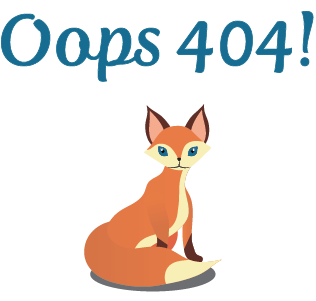

  <div class="pad-t-2 gutter error">

    <div class="logo gutter-1">
      
    </div>

    <div class="error-img img  text-center">
      
    </div>

    <div class="content gutter-half text-center">

        <p class="push-half error-p">Oh No! I need to fix something!</p>

        <p>Try again later!</p>

      <a class="btn btn-ghost mega" href="{{site.baseurl}}/index.html">Home</a>

    </div>

  </div>
